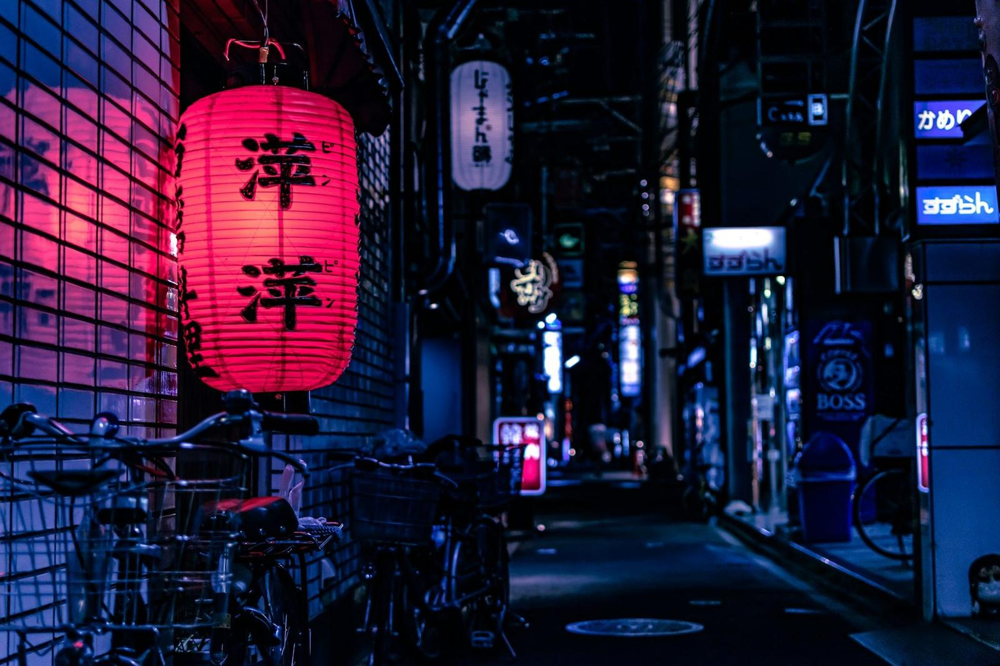
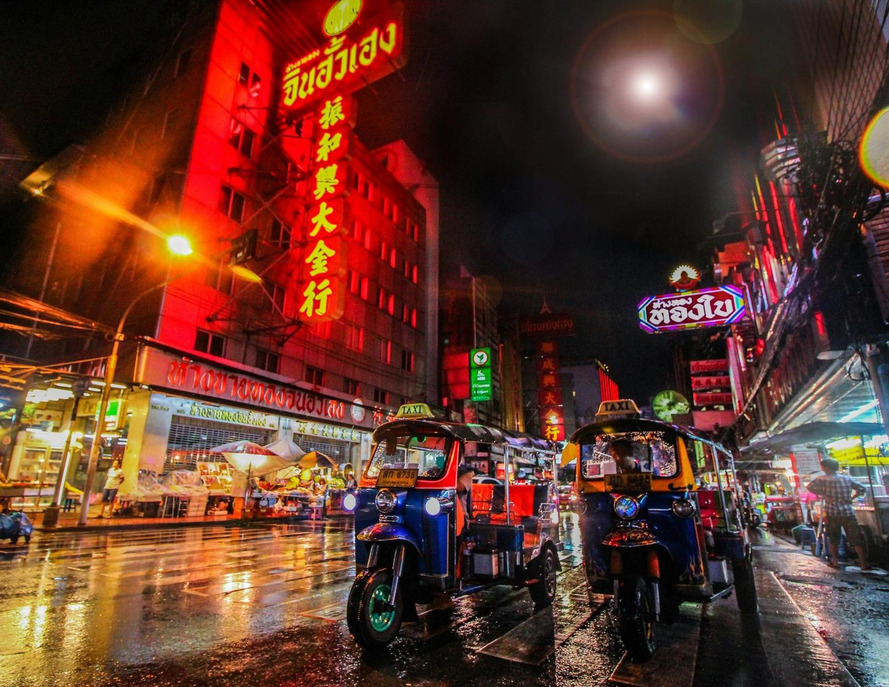
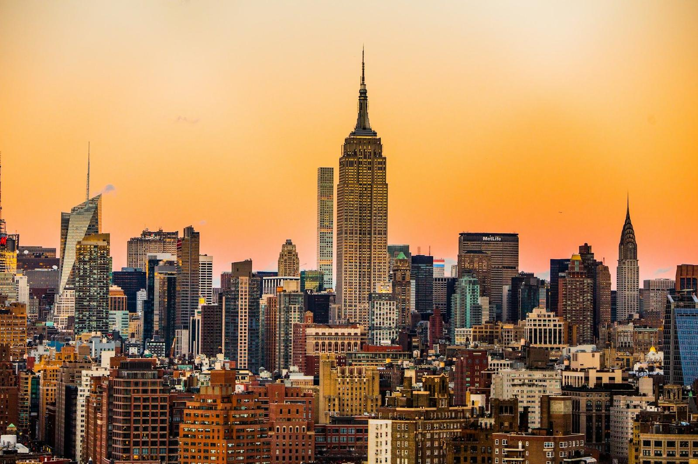

Gallery — 摄影画廊
Frames kept
光影存档。点击任意一张照片打开灯箱——方向键切换、Esc 关闭，手机端可左右滑动。
 Kiyomizu — 京都 · 东山
Kiyomizu — 京都 · 东山
 Gion — 京都 · 祇园
Gion — 京都 · 祇园

Tokyo — 日本 · 夜色 Senbon Torii — 京都 · 千本鸟居
Senbon Torii — 京都 · 千本鸟居
 Seine & Eiffel — 巴黎 · 塞纳河
Seine & Eiffel — 巴黎 · 塞纳河

Neon — 夜色 · 招牌 Louvre — 巴黎 · 卢浮宫
Louvre — 巴黎 · 卢浮宫
 Eiffel — 巴黎 · 铁塔
Eiffel — 巴黎 · 铁塔
 Canyon — 冰岛 · 峡谷
Canyon — 冰岛 · 峡谷
 Jökulsárlón — 冰岛 · 冰河湖
Jökulsárlón — 冰岛 · 冰河湖
 Aurora — 冰岛 · 极光
Aurora — 冰岛 · 极光
 Night Sky — 冰岛 · 一号公路
Night Sky — 冰岛 · 一号公路
 Matterhorn — 瑞士 · 马特洪峰
Matterhorn — 瑞士 · 马特洪峰
 Alps After Dark — 瑞士 · 星夜
Alps After Dark — 瑞士 · 星夜
 Lake at Dusk — 瑞士 · 湖岸
Lake at Dusk — 瑞士 · 湖岸
 Amalfi Coast — 意大利 · 阿马尔菲海岸
Amalfi Coast — 意大利 · 阿马尔菲海岸
 Positano — 意大利 · 波西塔诺
Positano — 意大利 · 波西塔诺
 Alpine Lake — 阿尔卑斯 · 湖畔
Alpine Lake — 阿尔卑斯 · 湖畔
 Venice — 意大利 · 威尼斯
Venice — 意大利 · 威尼斯
 Santorini — 希腊 · 圣托里尼
Santorini — 希腊 · 圣托里尼
 Kyoto — 京都 · 街巷
Kyoto — 京都 · 街巷
 Shibuya — 东京 · 涩谷
Shibuya — 东京 · 涩谷
 Manhattan — 纽约 · 曼哈顿
Manhattan — 纽约 · 曼哈顿
 Street Grid — 纽约 · 街道
Street Grid — 纽约 · 街道

Skyline — 纽约 · 天际线